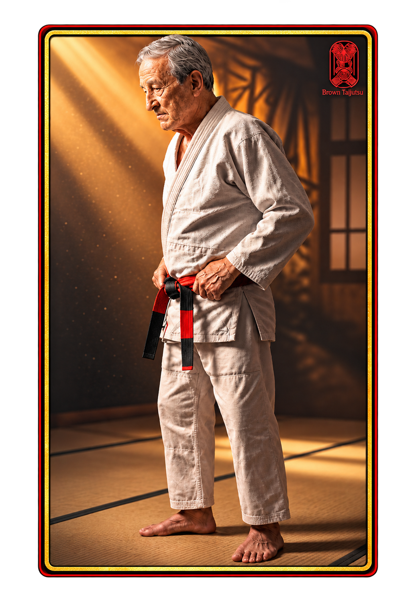
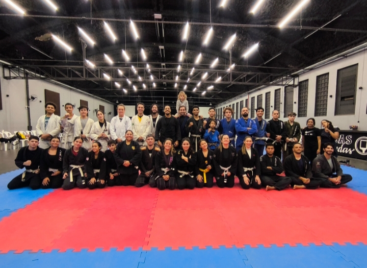

Mais do que uma luta...
o Jiu-Jitsu é um caminho de
disciplina e evolução constante.

Onde começou: o Jiu-Jitsu tem origem no Japão, como o jujutsu, a arte de luta corpo a corpo dos samurais. Mais tarde, o judô, criado por Jigoro Kano, deu a ela uma forma moderna e esportiva.
Como chegou ao Brasil: em 1914, o judoca japonês Mitsuyo Maeda, o "Conde Koma", chegou ao Brasil e se fixou em Belém, no Pará. Lá ficou amigo do empresário Gastão Gracie.
Quem espalhou: em 1917, Carlos Gracie, filho mais velho de Gastão, assistiu a uma demonstração de Maeda e passou a aprender a arte. Em 1925, Carlos abriu no Rio de Janeiro a primeira academia da família Gracie.
O Jiu-Jitsu Brasileiro: Carlos e os irmãos, em especial Hélio Gracie, adaptaram a luta com ênfase no chão e a aperfeiçoaram, tornando-a mais eficiente. Assim nasceu o Jiu-Jitsu Brasileiro, hoje praticado no mundo todo.
O Jiu-Jitsu pode e é muito mais do que uma jornada de tatame. Ele te disciplina, te ensina a ter controle e te conecta com pessoas que compartilham o mesmo propósito.
Conheça minha trajetória